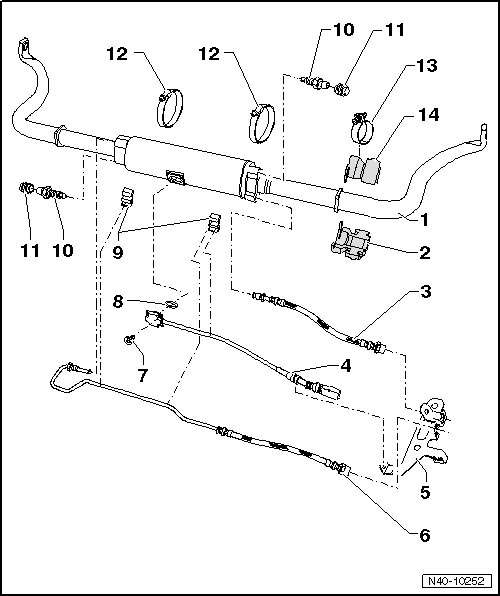
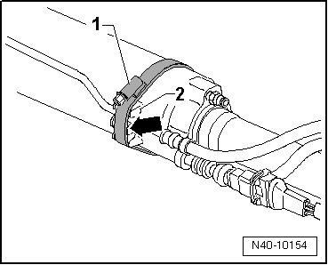

Separable Stabilizer Bar Assembly Overview
Separable Stabilizer Bar Assembly Overview

1 Separable stabilizer bar, front
• Removing and installing, refer to --> [ Separable Stabilizer Bar ] Separable Stabilizer Bar.
• Bleeding, refer to --> [ Separable Stabilizer Bar, Bleeding ] Procedures
2 Lower stabilizer bar mount
• Installation position:
• Mark on stabilizer bar before removing.
• Large outer diameter must point outward.
• Different versions.
3 Hydraulic line
• Tighten to 40 Nm at stabilizer bar.
• Insert in bracket at front in direction of travel --> [ (Item 5) Bracket ].
• With color marking.
• When pressure is built up in this line, coupling disc in stabilizer bar closes.
• Counter hold at hex of union nut using open end wrench when loosening connection.
4 Front axle stabilizer decoupling sensor (G484)
• Can be tested in "Guided Fault Finding" using the vehicle diagnosis, testing and information system (VAS 5051).
5 Bracket
6 Hydraulic line
• Tighten to 20 Nm at stabilizer bar.
• Insert in bracket at rear in direction of travel --> [ (Item 5) Bracket ].
• When pressure is built up in this line, coupling disc in stabilizer bar opens.
• Counter hold at hex of union nut using open end wrench when loosening connection.
7 Bolt
• 3 Nm
8 Seal
• Always replace after removal.
9 Bracket
• Secure to stabilizer bar using clamp --> [ (Item 12) Clamp ].
10 Bleeder nipple
• 5 Nm.
11 Dust cap
12 Clamp
• Installation position, refer to --> [ Installation position of clamp for mounting of hydraulic lines at decouplable stabilizer bar ]
13 Clamp
• 8 Nm.
• Only on vehicles with active body control.
• Installation position, refer to --> [ Stabilizer bar mount clamp installation position on vehicles with active body control ]
14 Upper stabilizer bar mount
• Installation position:
• Mark on stabilizer bar before removing.
• Large outer diameter must point outward.
• Different versions.
Installation position of clamp for mounting of hydraulic lines at decouplable stabilizer bar

• Clamp fastener - 1 - must be above bracket - 2 -. From this it follows that the clamp is tightened from below.
• Clamp must directly make contact at bracket - 2 - - arrow -.
Stabilizer bar mount clamp installation position on vehicles with active body control

• The bolt - 1 - must be at the top.